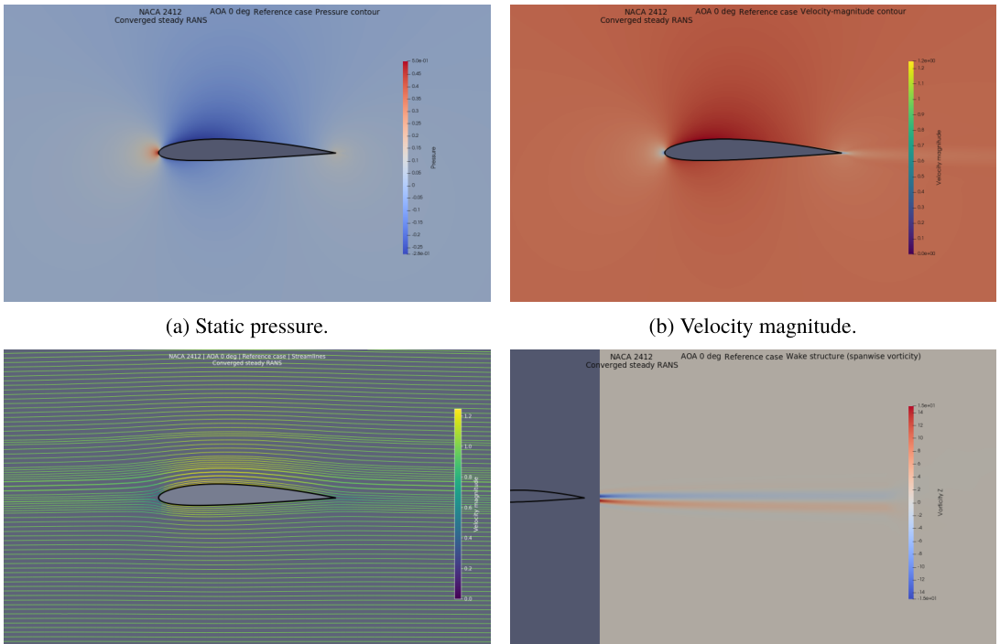

Project overview
Aerodynamic analysis over 26 incidence angles (−5° to 20°) at chord Reynolds number 3.1 × 10⁶, using an archived and documented computational workflow.
Methods
A three-mesh family (152,354 / 288,996 / 550,284 elements) was used for formal convergence verification. Attached and near-stall cases used RANS with SST-2003m and Langtry–Menter transition modeling; a spanwise-periodic SA-DDES pilot was examined for post-stall behavior.
Results
At 0°, the report gives Cₗ = 0.2289 and Cᴅ = 0.00523. Maximum lift-to-drag ratio was 89.68 at 4°, and maximum reported lift was about 1.62 at 15°. The middle production mesh was 1.13% from the Richardson-extrapolated drag value.
Limitations
Post-stall behavior was explored with a limited DDES pilot; intermediate post-stall polar points include estimates from available results, and therefore should not be presented as independently resolved simulations.
This is a student research project report, not a peer-reviewed publication. The linked PDF documents the full methodology, figures, and limitations.